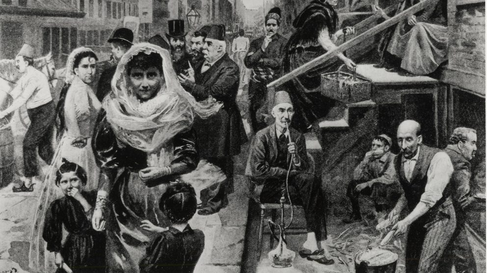
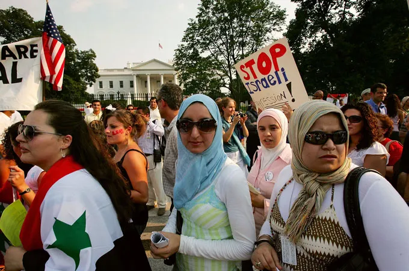
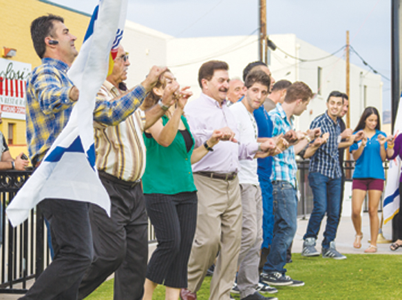
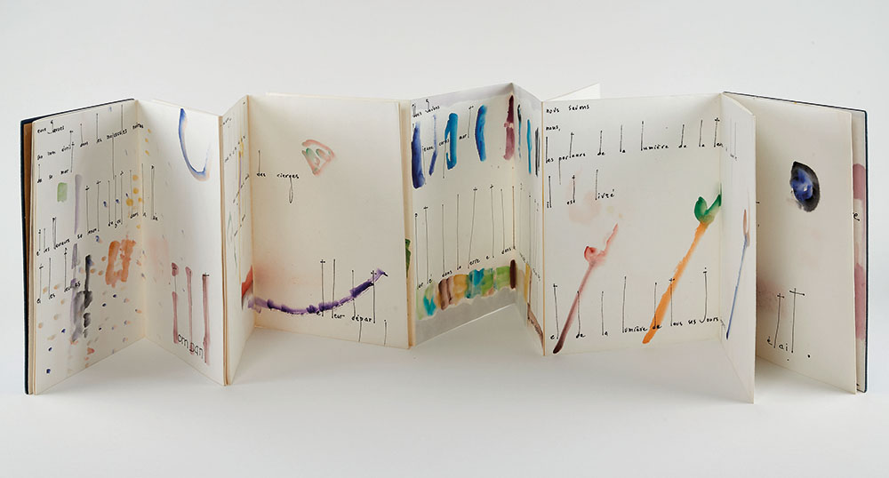
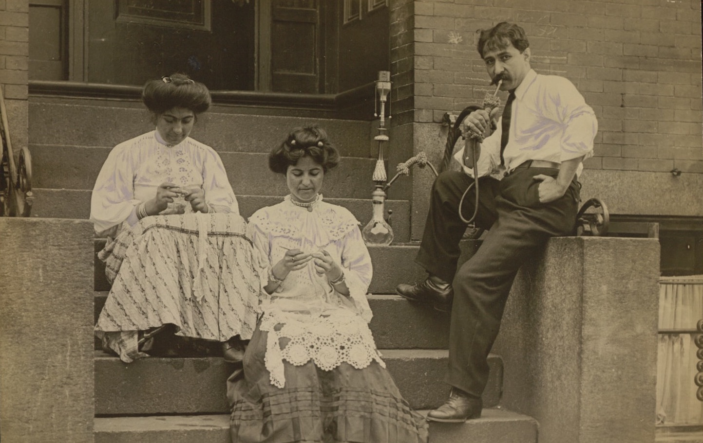
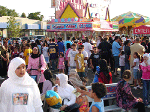

Essential Question
How has the Arab American community built a life in the United States while navigating stereotypes, discrimination, and questions about loyalty and belonging?
In the weeks after September 11, 2001, a man named Adel Kamal walked into a barbershop in Dearborn, Michigan, and found a handwritten sign taped to the window: "We don't serve Arabs." Kamal had been born in Michigan. His father had been born in Michigan. His grandfather had come from Lebanon in 1920, sold dry goods from a pack on his back through the Ohio River valley, saved enough money to open a store, and eventually built a life that his children and grandchildren continued. Three generations of American citizenship, military service, and community-building — and a handwritten sign. What happened to Arab Americans after September 11 did not appear from nowhere. It was built from a century of stereotypes, fear, and the demand that Arab Americans constantly prove they belonged.
In the weeks after September 11, 2001, a man named Adel Kamal walked into a barbershop in Dearborn, Michigan, and found a sign in the window: "We don't serve Arabs." Kamal had been born in Michigan. His father had been born in Michigan. His grandfather came from Lebanon in 1920 and spent decades building a life in America. Three generations of citizenship and service — and a sign telling him to leave. What happened to Arab Americans after September 11 did not come from nowhere. It was built from a century of stereotypes and the demand that Arab Americans prove they belonged.
PHASE ONE
HISTORICAL CONTEXT

Early Arab American immigrants from Greater Syria — modern-day Lebanon, Syria, Jordan, and Palestine — who arrived in the United States beginning in the 1880s and built lives as traveling merchants and small business owners. Library of Congress / Wikimedia Commons.
The first significant wave of Arab immigration to the United States began in the 1880s and came overwhelmingly from Greater Syria — the region that is now Lebanon, Syria, Jordan, and Palestine. Most were MaroniteMembers of a Lebanese Christian church that is in communion with the Roman Catholic Church — one of the oldest Christian communities in the world. and Eastern Orthodox Christians fleeing instability under the Ottoman Empire and searching for economic opportunity. They landed in New York, Boston, and other port cities and quickly spread across the country as traveling merchants — carrying packs of dry goods, fabric, and household items on their backs and selling door to door through the rural South, the Midwest, and industrial cities. They were called peddlers, and many of them eventually saved enough to open stores, bring over relatives, and plant the first Arab American communities in places like Dearborn, Michigan; Birmingham, Alabama; and Toledo, Ohio.
The first large wave of Arab immigration to the United States began in the 1880s. Most came from the region called Greater Syria — now Lebanon, Syria, Jordan, and Palestine. Most were Christian, fleeing instability and poverty under the Ottoman Empire. They arrived in East Coast cities and spread across the country as traveling merchants — carrying packs of goods on their backs and selling door to door. Over time, many saved enough to open stores, bring family members over, and build communities in places like Dearborn, Michigan, Birmingham, Alabama, and Toledo, Ohio.
These early Arab Americans built their own institutions: churches, diasporaA community of people who have left their homeland and settled in other countries, while maintaining connections to their culture and each other. organizations, Arabic-language newspapers, and mutual aid societies. They became citizens, and their sons served in World War I and World War II. They were Catholic and Orthodox Christians whose communities were largely invisible to mainstream America — treated as white enough to assimilate in some contexts and foreign enough to be suspect in others. The second wave of Arab immigration came after the Immigration Act of 1965 opened the country to non-European immigrants more broadly, and after the Arab-Israeli wars of 1948 and 1967 displaced Palestinians and created refugees. This second wave included more Muslims, more political refugees, and communities fleeing specific conflicts rather than general poverty.
These early Arab Americans built churches, community organizations, Arabic-language newspapers, and mutual aid groups. They became citizens and served in both World Wars. A second wave of Arab immigration came after 1965, when the United States opened immigration to non-European countries, and after the Arab-Israeli wars displaced Palestinians and created refugees. This second wave included more Muslims and more people fleeing specific conflicts. Today Arab Americans include Lebanese, Egyptian, Syrian, Iraqi, Palestinian, Yemeni, and many other communities — Christian and Muslim, wealthy and working-class, long-established and recently arrived.
The stereotypeA fixed, oversimplified belief about a group of people that ignores the real diversity within that group. of the Arab as terrorist, oil sheikh, or belly dancer became embedded in American film and television starting in the 1970s. A 2001 study by media scholar Jack Shaheen documented over 900 Hollywood films that portrayed Arab and Muslim characters as villains, buffoons, or threats. These images were produced before September 11 — but they prepared the ground for what came after.
Stereotypes of Arab people as terrorists, oil sheikhs, or belly dancers became common in American movies and TV starting in the 1970s. A 2001 study found over 900 Hollywood films that showed Arab and Muslim characters as villains or threats. These images existed before September 11 — but they prepared Americans to respond to Arab Americans with fear and suspicion after the attacks.
DID YOU KNOW
Khalil Gibran — author of "The Prophet," one of the best-selling books in history — was a Lebanese immigrant who arrived in Boston in 1895 at age twelve, speaking no English. He went on to write poetry and philosophy in both Arabic and English that has been translated into more than 40 languages and is still read worldwide. He was Arab American before that term existed — and most Americans who have read his words have no idea he was from Lebanon.
PHASE TWO
RESISTANCE AND AGENCY

Arab American community members organizing and advocating for civil rights. The Arab American Anti-Discrimination Committee was founded in 1980 to challenge discrimination and stereotyping — more than two decades before September 11. Wikimedia Commons.
Arab American community organizing did not begin after September 11 — it had been building for decades. The Arab American Anti-Discrimination Committee (ADC) was founded in 1980 by former United States Senator James Abourezk, a Lebanese American from South Dakota, to fight against discriminationTreating people unfairly because of their race, religion, national origin, or other identity. and stereotyping in media, employment, and public life. The ADC documented hate crimes, challenged discriminatory portrayals in film and television, provided legal support to community members, and built a national presence before most Americans had any framework for understanding Arab American civil rights. Community organizations in Dearborn and Detroit became some of the strongest local political forces in Michigan, supporting Arab American candidates and making Arab American concerns a visible part of local and state politics.
Arab American organizing did not start after September 11. The Arab American Anti-Discrimination Committee was founded in 1980 by James Abourezk, a Lebanese American senator from South Dakota, to fight stereotypes and discrimination in media and public life. Community organizations in Dearborn and Detroit became strong political forces in Michigan long before the 2001 attacks, supporting Arab American candidates and making their community's concerns visible in local politics.
After September 11, Arab American organizations, mosques, and community leaders faced an impossible demand: to publicly condemn the attacks, prove their loyalty, and take responsibility for violence committed by people who shared their ethnic or religious identity. The demand itself was a form of discriminationTreating people unfairly because of their race, religion, national origin, or other identity. — no other ethnic or religious community in America was held collectively responsible for crimes committed by members of their group. Arab American activists named this directly, organized against the Patriot ActA law passed in 2001 that expanded government surveillance powers, used disproportionately against Muslim and Arab American communities., and challenged the special registration programs that required men from Arab and Muslim-majority countries to report to immigration offices for fingerprinting and monitoring.
After September 11, Arab American communities were pressured to publicly condemn the attacks and prove their loyalty — a demand no other ethnic group faced. Arab American activists named this as discrimination. They organized against the Patriot Act, which expanded government surveillance and was used heavily against Muslim and Arab communities. They challenged special registration programs that required men from Arab and Muslim-majority countries to report to immigration offices and be fingerprinted, as if their national origin made them suspects.
Arab American political participation also grew in the years after September 11. More Arab Americans ran for office, registered to vote in higher numbers, and built coalitions with other communities of color facing similar surveillance and discrimination. In Dearborn — which has the highest concentration of Arab Americans of any city in the country — Arab Americans have served on city council, as mayor, and in state and federal roles. The response to discrimination was not only protest: it was also presence, visibility, and the insistence on full participation in American political life.
Arab American political participation also grew after September 11. More Arab Americans ran for office, voted in higher numbers, and built coalitions with other communities facing surveillance and discrimination. In Dearborn — the city with the highest concentration of Arab Americans in the country — Arab Americans have served as mayor and in state and federal positions. The response to discrimination included protest, but also political organizing, electoral participation, and the insistence on full visibility in American public life.
FAST FACTS
ARAB AMERICA BY THE NUMBERS
3.7MArab Americans in the United States today — a community as large as the entire population of Los Angeles
63%of Arab Americans who are Christian, not Muslim — the opposite of what most Americans assume
900+Hollywood films documented as portraying Arab characters as villains or threats — in a study published the same year as September 11
1880swhen the first significant Arab immigration to the United States began — making Arab Americans one of America's oldest immigrant communities
PHASE THREE
PRESENT REALITY

El Cajon, California — home to the largest Chaldean community in the United States outside Detroit. Chaldean Christians were driven from Iraq primarily by the sectarian violence that followed the 2003 U.S. invasion. Wikimedia Commons.
Arab Americans today number around 3.7 million and span an enormous range of national origins, religions, class positions, and political views. Lebanese Americans, Egyptian Americans, Syrian Americans, Iraqi Americans, Palestinian Americans, and Yemeni Americans are all counted within the Arab American category — but they share little beyond a general linguistic and cultural heritage, and even that is complicated by the diversity of the Arabic-speaking world. The single most important thing to know about Arab Americans is also the thing American media most consistently gets wrong: the majority of Arab Americans are Christian, not Muslim. The image of the Arab as Muslim and the Muslim as Arab — and both as potential threats — flattens a community of enormous diversity into a single, dangerous stereotype.
Arab Americans today number about 3.7 million and include Lebanese, Egyptian, Syrian, Iraqi, Palestinian, Yemeni, and many other communities. They are Christian and Muslim, wealthy and working-class, long-established and newly arrived. The most important fact that American media consistently gets wrong: the majority of Arab Americans are Christian, not Muslim. The stereotype of Arab equals Muslim equals threat erases the real diversity of a community that has been part of America for over a century.
San Diego's Arab American community includes a significant Chaldean population in El Cajon. ChaldeansAn ethnic Semitic people indigenous to Mesopotamia — modern Iraq — who have practiced Christianity since the first century AD and speak Neo-Aramaic, a descendant of the language of Jesus. are an ancient Christian community from Iraq who speak Neo-Aramaic — a language descended from Aramaic, the language spoken by Jesus. Chaldeans lived in Iraq for millennia, and under Saddam Hussein's secular government they had a degree of protection as a religious minority. When the United States invaded Iraq in 2003 and central authority collapsed, Chaldean Christians became targets of sectarian violence. Churches were bombed. Community leaders were kidnapped. Families received threats. Hundreds of thousands of Chaldean Christians fled Iraq between 2003 and 2010, and a significant share settled in El Cajon, which now carries the local nickname "Little Baghdad." The Chaldean community in El Cajon is one of the clearest examples in San Diego of a community whose presence here is inseparable from an American military decision made far away.
San Diego's Arab American community includes a large Chaldean population in El Cajon. Chaldeans are an ancient Christian people from Iraq who speak a language descended from Aramaic — the language spoken by Jesus. When the United States invaded Iraq in 2003 and central authority collapsed, Chaldean Christians became targets of sectarian violence. Churches were bombed, community leaders kidnapped, families threatened. Hundreds of thousands fled Iraq between 2003 and 2010, and many came to El Cajon, which is now called "Little Baghdad." The Chaldean community in El Cajon is here because of a decision made in Washington DC — not because they chose to leave their homeland.
IslamophobiaPrejudice, discrimination, or hostility toward Islam and Muslim people, often based on fear or false stereotypes. — prejudice and discrimination against Muslims — has continued to affect Arab Americans and Muslim Americans regardless of their actual religion. Surveillance of Muslim communities, hate crimes at mosques and Arab-owned businesses, discrimination in airports and workplaces, and political rhetoric portraying Islam as a threat to American values have all intensified in waves since September 11. Arab American activists, organizations, and community members continue to organize against these conditions: through legal challenges, coalition-building with other communities, cultural work that tells more complete and honest stories, and the daily act of living publicly and fully as Arab Americans in a country that continues to ask whether they truly belong.
Islamophobia — discrimination against Muslims — has continued to affect Arab Americans and Muslim Americans since September 11. Surveillance, hate crimes, workplace discrimination, and political rhetoric portraying Islam as a threat have intensified in waves. Arab American activists and community organizations continue to challenge these conditions through legal action, coalition-building, cultural work, and the everyday act of being fully visible and present in a country that still questions whether they belong.
Real-world connection: Dearborn, Michigan is the city with the highest concentration of Arab Americans in the country, and its Arab American community has become one of the most politically active and visible in the United States — a model of community power built over more than a century.
Real-world connection: Dearborn, Michigan has the highest concentration of Arab Americans in the country. Its community has become one of the most politically active in the United States — built over more than a century of organizing, business-building, and civic participation.
ART SPOTLIGHT

Leporello book works — Etel Adnan, circa 1960s–2010s
Lebanese American poet and visual artist Etel Adnan created a body of work that combined Arabic and French poetry with visual painting across hand-made accordion-fold books called leporellos. Her work is held in major museum collections including the Guggenheim and the Museum of Modern Art.
Adnan was born in Beirut in 1925 and initially wrote only in French because she was educated by French nuns and had been taught that Arabic was not a language of modern literature. She began writing in Arabic only after Lebanese independence in 1943 — and eventually created a new art form combining visual and written language that made the shape of Arabic letters themselves part of the artwork. She died in 2021 at age 96, still writing, and her final collection of poems was published while she was in her nineties.
PRIMARY SOURCE MOMENT
James Abourezk, Lebanese American US Senator and founder of the Arab American Anti-Discrimination Committee. Wikimedia Commons.
"Arabs in America have been the targets of stereotyping and ridicule for many years... Arab Americans have been cast as buffoons, bombers, belly dancers, and billionaires... The image of the Arab world conveyed by Hollywood has been one of oil, sand, camels, and violence. Arabs are portrayed as uniformly wealthy, or uniformly fanatic, or uniformly villainous... This is not just insulting. It is dangerous. People act on the images they carry."
— James Abourezk, founder of the Arab American Anti-Discrimination Committee, founding statement, 1980
WHY THIS MATTERS: Abourezk wrote this in 1980 — more than twenty years before September 11. He is identifying something that was already happening: the reduction of a 3.7 million-person community to a handful of negative images. His last sentence is the argument for why this matters: "People act on the images they carry." As you read this, think about what images of Arab people you have seen in movies, television, or news. Where did those images come from, and what do you think people are being prepared to feel about Arab Americans when they see them?
THEN AND NOW
ARAB AMERICANS HAVE BEEN IN THE UNITED STATES FOR OVER 140 YEARS — AND ARE STILL BEING ASKED TO PROVE THEY BELONG.
1880s

Early Lebanese and Syrian immigrants in the United States, circa 1890–1920. Library of Congress.
NOW

Arab Americans at a community event in Dearborn, Michigan — a city with the highest Arab American population density in the country. CC license.
THEN
When the first Arab immigrants arrived in the 1880s and 1890s, they were selling goods from packs on their backs in rural America, building communities in cities that had no framework for understanding who they were. They built their own institutions because the mainstream institutions did not include them. They proved their citizenship through military service, economic contribution, and community-building — but belonging was never fully granted, only negotiated.
NOW
Today Arab Americans serve in Congress, run major American cities, lead major universities and hospitals, and contribute to American culture as writers, artists, scientists, and activists. The community Adel Kamal's grandfather helped build in Michigan is now large enough to determine election outcomes in a swing state. But the question of belonging — expressed in surveillance programs, hate crimes, media stereotypes, and political rhetoric — has not been fully resolved.
CONNECTION
Arab Americans have spent 140 years building a place in this country while being asked, repeatedly and in different forms, to prove they deserve to be here. The demand that they condemn violence, prove loyalty, or apologize for their religion or ethnicity is a form of discrimination that has followed the community from the first Lebanese peddler to the most recent Chaldean refugee. What has also followed them, in every generation, is the refusal to accept that framing — the insistence on building, organizing, and claiming full membership in American life.
Abourezk said in 1980 that people act on the images they carry. What images of Arab Americans do you carry — and where did they come from?